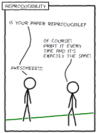
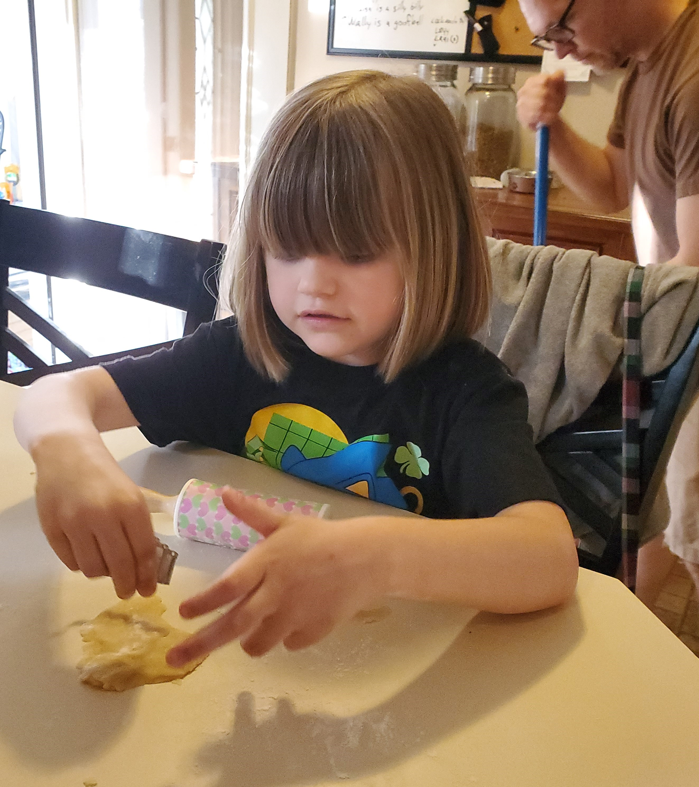
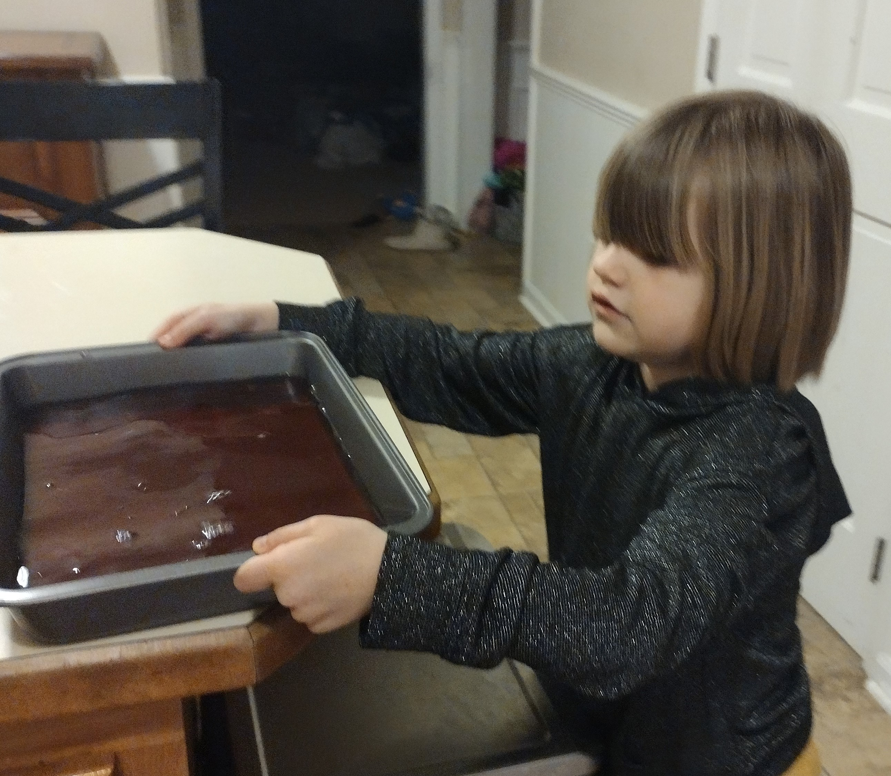
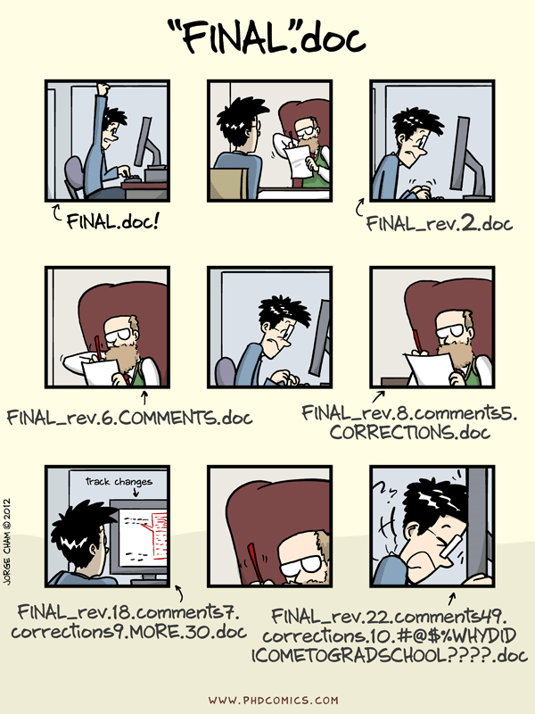
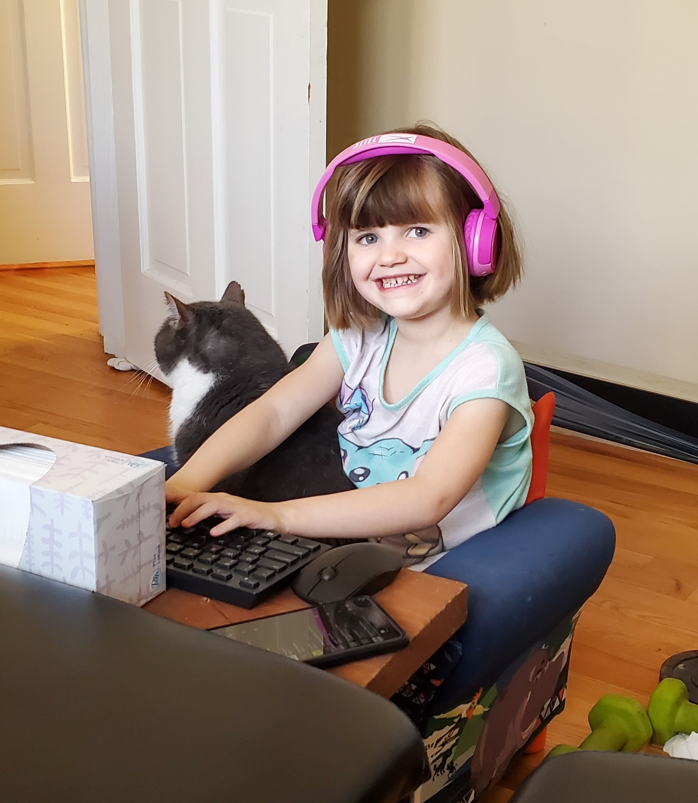
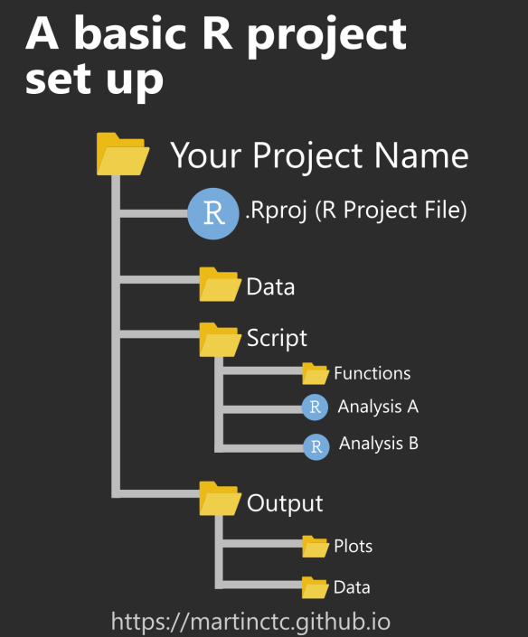
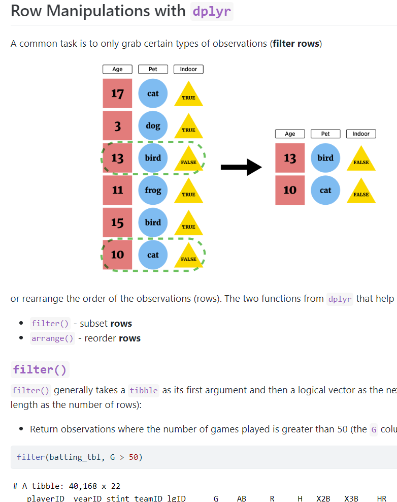
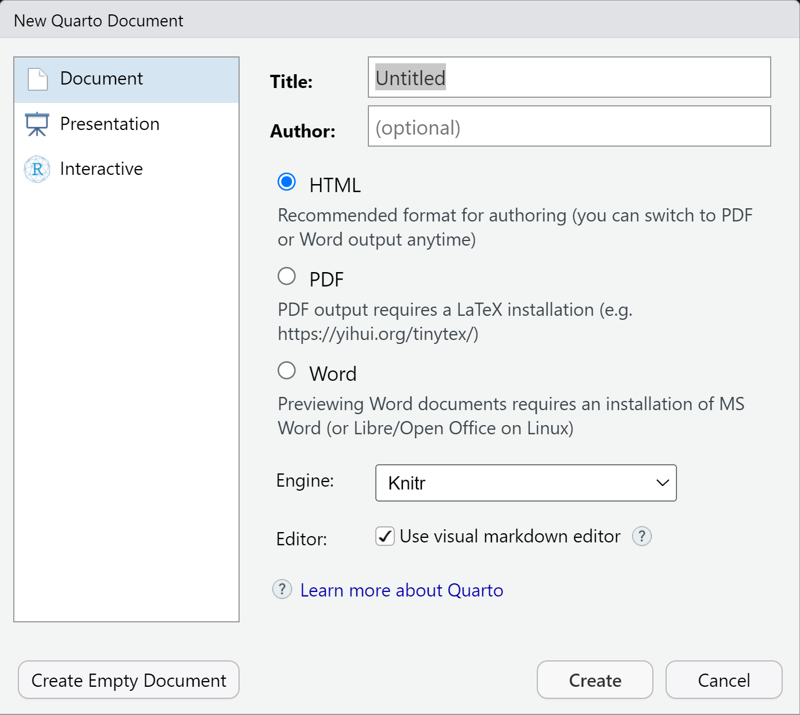
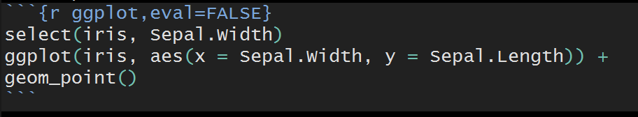
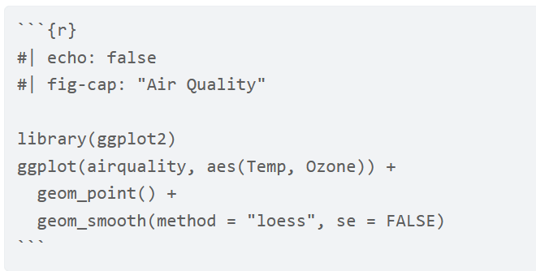

Teaching Reproducible Workflows Using Digital Notebooks
Reproducible workflows are important! Tools like GitHub, Quarto, and Google Colab make reproducibility easy-ish.
Welcome!
Goals:
Describe reproducible workflows
Implement a reproducible workflow with Git/GitHub and Quarto
Ideally, use RStudio with git installed on the computer. Completely web-based alternatives discussed!
A Bit About Me
- Teaching Professor in Department of Statistics at NC State (old picture of me when I was young)
- Love mixing computing and statistics
A Bit About Me
- Most importantly:
Two kids!


Cooking
Louisa loves to ‘cook’



Delicious Meal!

Delicious! She did it!
Delicious Meal!
Delicious! She did it!
- Wait… How did she do that?
Delicious Meal!
Delicious! She did it!
- Wait… How did she do that?
- Oh no! Lack of reproducibility!
Fatherly Advice: Git/GitHub
If she’d just used Git/GitHub to track her recipes, we wouldn’t be in this mess!
Fatherly Advice: Git/GitHub
If she’d just used Git/GitHub to track her recipes, we wouldn’t be in this mess!
- Git: keeps all versions recipes without this –>

Git: Version Control Software
You associate git with a folder (repo)
- Git keeps track of all files in the folder (repo)
- If you want to keep changes you’ve made, you commit and push the changes to the folder (repo)
Git & GitHub
Git is a version control software
Github is an online hosting service for Git-based projects
- Very useful for collaborating and sharing work!
Mixing Cuisines!
Issue: Louisa keeps getting her Chinese food recipes mixed up with her Italian recipes!
Fatherly Advice: R Projects
If only she’d use R projects!
Fatherly Advice: R Projects
If only she’d use R projects!
Basically a file that gets associated with a folder (repo)
Maintains a working directory, history, environment, etc.
Easy to switch between projects!

R Projects
R projects provide a straightforward way to divide your work into multiple contexts. Each with their own:
- Working directory
- Workspace (environment with stored data/objects)
- History
- Folder structure & source documents
- Can be used outside of git/github
- Spyder IDE for python has similar functionality
Including Thoughts/Comments
Lousia has trouble remembering what she was thinking when trying her recipes!

Fatherly Advice: Quarto
If only she’d use Quarto (or, alternatively, Jupyter) Notebooks!
Fatherly Advice: Quarto
If only she’d use Quarto (or, alternatively, Jupyter) Notebooks!
- Give us a way to include thoughts and comments with nice formatting
- Can output to HTML, PDF, Word, Power Point, …
- Code can be included and output automatically embedded!

Quarto
Designed to be used in three ways (R for Data Science)
Communicating to decision makers (focus on conclusions not code)
Collaborating with other data scientists (including future you!)
As environment to do data science (documents what you did and what you were thinking)
Sharing Recipes
Louisa wants to share her delicious recipes with her friends!

Fatherly Advice: Use Quarto & Github
If only she’d use Quarto with GitHub!
Fatherly Advice: Use Quarto & Github
If only she’d use Quarto with GitHub!
Easy way to collaborate and share results
Can simply store code on git/github or include output from quarto
Quarto can easily(-ish) create a webpage on github!
List of Tools
- Git: Version control software
- GitHub: Online platform for using git/collaborating
- R Project: Keep analysis in its own context
- Quarto: Integrate text and code to create useful output docs
List of Tools
Git: Version control software
GitHub: Online platform for using git/collaborating
R Project: Keep analysis in its own context
Quarto: Integrate text and code to create useful output docs
Google Colab - web based way to program in python and R
- Can use with github
- Some functionality similar to quarto
Data Science Workflow
Usually
- Read in raw data and manipulate it
- Combine data sources
- Summarize data to glean insights
- Apply common analysis methods
- Communicate Effectively
Want to document this process and make it reproducible, collaborative, and easily shared!
Practice!
- Sign up for github account
- Create a repo
- Make some changes! Check version control
- Either use RStudio (git is required) or google colab to make changes!
- Show quarto or jupyter notebook usefulness
Recap
Git & GitHub
Git is a version control software
Github is an online hosting service for Git-based projects
- Very useful for collaborating and sharing work!
Git Tracking
You associate git with a folder (repo)
Git keeps track of all files in the folder (repo)
If you want to keep changes you’ve made, you commit and push the changes to the folder (repo)
Github
- Github allows you to have a remote file repository (folder) tracked by git
Github
- Github allows you to have a remote file repository (folder) tracked by git
Fatherly Advice!
Create a repo on GitHub (a remote git tracked folder)
Place your recipe in there
Each time you try a new version of the recipe, commit the changes to the file
- Let’s do it!
Local vs Remote Work
Mostly you’ll want to work on your local computer.
Install
giton your computer!(For R users) Connect RStudio with
gitCan just use the web interface or github desktop
Workflow
After creating repo on github:
(Initially) clone the repo locally. (Later) pull to get most recent versions of files
Work and make changes
add and commit to changes you like
push changes to remote repo (on github)
Let’s clone our repo and work on it locally!
For R Users
Separating Projects…
When considering our data science workflow, we want to have a seamless way to
- work on our project
- utilize version control
- use local file paths for ease of sharing code
- collaborate with others
All of this can be accomplished using R projects with git and github!
R Projects
R projects provide a straightforward way to divide your work into multiple contexts. Each with their own:
- Working directory
- Workspace (environment with stored data/objects)
- History
- Folder structure & source documents
- Can be used outside of git/github
Cloning a Repo with RStudio
(For R users) We don’t want to use github.com web interface as that is inefficient.
Better to clone the repo via the URL and use RStudio! Open RStudio,
- go to File –> new project
- select from version control
- choose Git
- paste in the repo link
- select a directory to save this repo in
- hit create project!
Now have the files locally and this associates an R project with a git repo!
connecting Github and RStudio
If you can connect RStudio to your github account, life simplifies!
Can be annoying but instructions are available!
Documenting Thoughts
We also need to make sure that we document our thoughts and process as we work through cleaning our data, summarizing it, and fitting our models.
Quarto: Next generation version of R Markdown!
- Built to use multiple programming languages (R, python, and Julia) easily
- Works with Jupyter Notebook format as well
- Created via a
.qmd(quarto markdown file) - Renders most .Rmd files as is!
Documenting with Markdown via quarto
Designed to be used in three ways (R for Data Science)
Communicating to decision makers (focus on conclusions not code)
Collaborating with other data scientists (including future you!)
As environment to do data science (documents what you did and what you were thinking)
It is easy to create many types of documents in quarto! Go to file –> New File –> Quarto Document
Elements of a Quarto Document
YAML header
Markdown text
Code chunks
YAML Header
YAML (“Yet Another Markup Language” or “YAML ain’t markup language”)
- Defines settings for the creation process
---
title: "Untitled"
format: html
editor: visual
---Markdown Syntax
Quarto uses a Markdown language
- HTML is the most commonly known markup language
<h1>My first level header</h1>
<a href = "https://www.google.com">Link to a search engine.</a>
- Markdown is a simpler version of this
# My first level header
[Link to a search engine](https://www.google.com)
Code Chunks
Where R markdown and quarto go beyond is in the ability to weave R code into the equation!
- You can include code chunks in your markdown.
- You then render the markdown through RStudio (or the command line).
- The R code runs and output is included in the final document!
- It is very awesome.
Code Chunks
Start a code chunk by typing out the syntax or with CTRL/CMD + Alt/Option + I
When rendering:
- Chunks run sequentially in the document
- Chunks share objects. Essentially an R environment is created when rendering a document and all objects created in chunks are stored in it.
- Can specify behavior of each code chunk (show R code or hide it, evaluate or don’t evaluate) and set global chunk behavior
Code Chunk Options
To change the behavior of code chunks, we use chunk options:
- Hide/show code with
echo = FALSE/TRUE
- Choose if code is evaluated with
eval = TRUE/FALSE
- Have code evaluate, not show, and show no output with
include = TRUE/FALSE - Turn on/off displaying of messages or warnings with
message = TRUE/FALSEandwarning = TRUE/FALSE
Code Chunk Options
- Specified via

or

Global Chunk Options
With quarto, if you want to specify global chunk options the best way to do so is in the YAML header. Be very careful about spacing in YAML headers!
Here is an example that would make all code chunks be ‘collapsed’ by default.
---
title: "My Document"
format: html
knitr:
opts_chunk:
collapse: true
---Resources
We’ll go through the basics to get you started. Much more is available on the quarto docs page, the RStudio quarto integration page, and in the R for Data Science book.
[Cheat Sheet link](https://rstudio.github.io/cheatsheets/quarto.pdf)\(\rightarrow\) Cheat Sheet link
Check this site for markdown basics. (Headers can be used to easily create a table of contents (and is useful for accessibility of documents).)
Sharing Work
By using quarto with git/github we get a reproducible workflow where we can easily share the results!
Can Create a Website
Clone this repo and then we can easily create a website
Just need to use
quarto renderin the terminalPush all changes up!
Share instruction document on that process
Collaboration Idea
GitHub allows for easy collaboration
- Everyone can work on the same
branchand just take turns working

Working on Branches
- Alternatively, you can have separate branches of the repo
Work on a branch is similar to working on the main branch
Can merge when happy!
Recap
Git is a version control software
- Associated with a folder (repo)
- Tracks changes to files
Github is an online hosting service for Git-based projects
Quarto allows you to document your thought process and code
Combining github and quarto allows you to communicate and collaborate easily!
Special thanks to Louisa